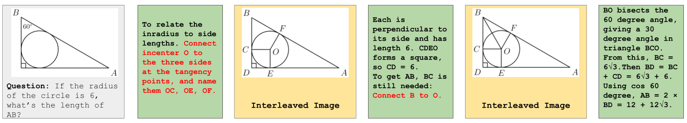
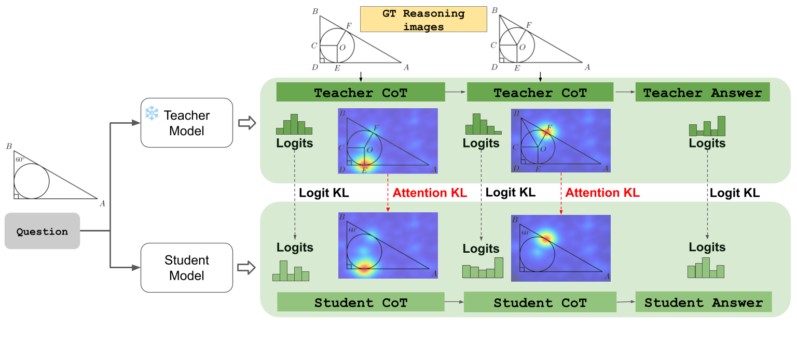
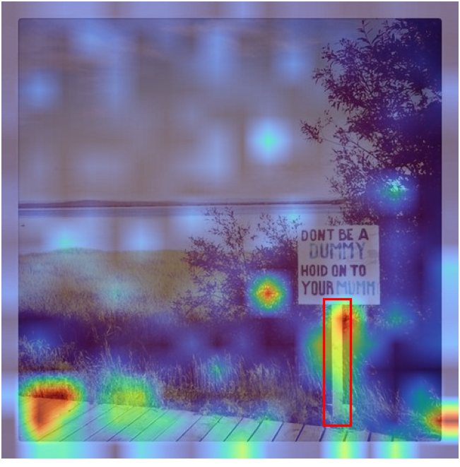
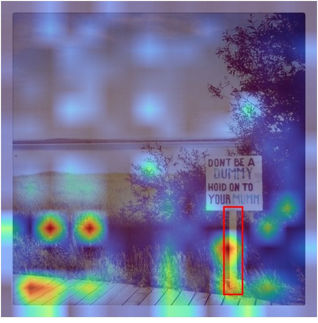
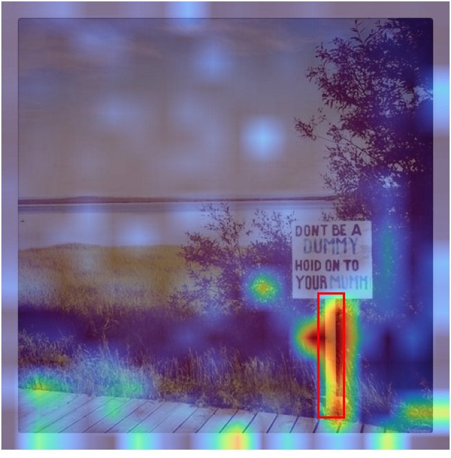

V2T
Distilling visual reasoning into text space
Train with images in the chain of thought. Reason without them at inference.
1University of California, Los Angeles 2Cisco Research
More accurate, for a fraction of the compute
Average over HR-Bench 4K/8K, V*Bench, BLINK and POPE, all 7B models (Table 2 of the paper). Hover or tap a point for its name. Costs marked ∗ in the paper are estimated from reported configurations.
average on the broad visual suite, the best of all methods compared, from tool-based to latent visual reasoning
fewer GPU-hours than Vision-R1 (80 vs 3,392), and 1× inference cost with no intermediate images
on MathVista, the highest among the 7B reasoning models we compare, after a short RL run
Overview
Many visual problems need more than the picture you are given: an auxiliary line in a geometry diagram, a zoomed-in crop, the next board state. Recent models generate those intermediate images, or latent visual tokens, inside their chain of thought.
That is slow, the generated visuals can be wrong, and errors carry forward. We also find that interleaved images increasingly get in the way of the text reasoning itself. V2T keeps the benefit and drops the cost: a teacher learns from interleaved image-and-text reasoning, and a student absorbs that skill while reasoning in text alone. At inference it is as cheap as any text-only model, and it beats its own teacher.

Scroll sideways to see the whole chain →
But interleaved images get in the way of the text
Longer reasoning, more interference
Extra loss from adding interleaved images, by how far into the chain of thought.
Even blank content hurts
Replacing half of each image with gray makes the gap larger, not smaller.
Text catches up, then wins
Accuracy when continuing from the same ground-truth reasoning steps, with or without the images.
Redrawn from Figure 2 of the paper. Loss gap is the mean loss with interleaved images minus without.
Method
V2T uses interleaved images as training-time supervision only. Two short supervised stages, then an optional short RL stage.

Scroll sideways to see the whole diagram →
Stage 1
Train an interleaved teacher
Fine-tune on chains of thought where steps come with crops, zooms or drawn constructions. The teacher learns where to look.
Stage 2
Distill into a text-only student
The student sees only the problem image. It learns from ground-truth text, the teacher's next-token distribution, and the teacher's attention projected back onto the original image.
Optional
Short GRPO with a grounding reward
Distillation already gives a strong start, so a short RL run is enough. When boxes are available, the reward also pays for attending to the right region.
Distillation objectiveL = Ltext + λ LKD + β Lattn λ = 0.1, β = 0.5
Grounding rewardrground = ½ ( |M̂ ∩ M| / |M̂| + |M̂ ∩ M| / |M| )
The teacher is conditioned on ground-truth reasoning images during distillation, never on generated ones, so errors in generated visuals cannot leak into the student.
Examples
Real questions from the paper. All three models get only the question and the original image. Phrases like “zoomed-in view” come from the teacher's interleaved format: V2T never generates or receives an extra image, it reasons over the original one.
Results
Broad visual suite: high-resolution perception (HR-Bench 4K and 8K), visual search (V*Bench), fine-grained perception (BLINK) and hallucination (POPE). V2T is compared with text-reasoning, latent visual reasoning, unified interleaved and tool-based methods.



It looks where it should
Attention IoU with the ground-truth box, over 100 Zebra visual search problems. Given its reasoning images, the teacher shifts attention onto them and away from the problem image. V2T grounds best.
Fewer spatial-reasoning errors
Error counts by category, relative to the interleaved teacher. The biggest drops are in spatial and global context.
Attention distillation matters
Broad-suite average. Distilling attention adds 4.7 points, with +14.9 on HR-Bench 8K and +16.7 on V*Bench; the grounding reward adds 1.4 more.
The student beats its teacher
Broad-suite average for the training-matched baselines, all from the same base model and data.
Full comparison
Best per column in bold, second underlined. Train is total GPU-hours; ∗ marks estimates.
Math reasoning
We also apply V2T to visual math, training Qwen2.5-VL-7B on ViRC, where each reasoning step can come with a crop of the problem figure. Because each crop maps back to a box in the original image, the teacher's attention on a crop can be transferred to that box.
By benchmark and problem type
MathVista (testmini) overall and by problem type, followed by two separate benchmarks, MathVision and LogicVista. Best per column in bold, second underlined.
In-domain results on Zebra-CoT
Accuracy on 200 held-out problems per category from the training distribution.
Citation
@article{yang2026distilling,
title = {Distilling Visual Reasoning into Text Space},
author = {Yang, Wenhan and Naharas, Nilay and Payani, Ali and
Mirzasoleiman, Baharan},
journal = {arXiv preprint arXiv:2609.34408},
year = {2026}
}